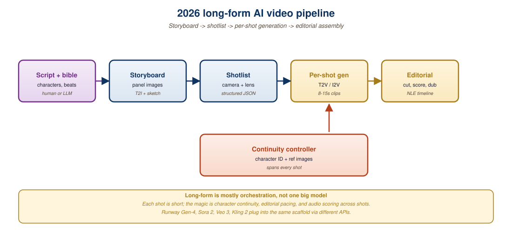

"A movie is not a long video. It is a sequence of intentional shots, each with its own grammar, stitched together so the audience never notices the cuts. The model that masters one shot still has to learn cinema."
Director's note from a 2025 AI-cinema workshop, Austin Film Festival
The hardest open problem in video AI is not making a 4-second shot look good (Section 33.2 covered that frontier). It is making a 10-minute sequence look like a coherent piece of cinema: characters who are visibly the same person across cuts, lighting and color that match across consecutive shots, story beats that land, and continuity that holds up to scrutiny. The 2025-2026 wave of "AI cinema" tools (Sora 2 cameos, Runway Gen-4 character sheets, Pika Pikaframes, Higgsfield, Kling Master Mode) is the first generation to credibly address this. This section walks the multi-shot consistency problem, character persistence techniques, the production workflow for AI-generated film, and the social-and-labor implications that are now being negotiated in real time.
1. The Multi-Shot Consistency Problem
A single video generation produces tokens that all attend to each other through the DiT's self-attention; within that one shot, the model has the architectural machinery to keep characters, lighting, and physical state coherent. Across cuts the model has no such machinery: each shot is a separate generation, and the model has no way to remember that the protagonist had a green jacket and a coffee stain in the last shot. The "character permanence" failure mode is the most common one production teams hit when trying to assemble multi-shot sequences from a generation API.
The 2024-2025 solutions to multi-shot consistency fall into three patterns. The first is character tokens: extract a learned embedding from reference images of the character, and condition every generation on that embedding. This is the IP-Adapter-Face pattern from image diffusion (Ye et al., 2023) extended to video. Sora 2's cameos and Pika's Pikaframes use this pattern. The second is reference shot conditioning: pass the last frame of the previous shot as a conditioning input to the next shot's generation, so the model has explicit visual continuity to copy. Runway Gen-4's "extend" mode and most consumer storyboarding tools use this. The third is 3D scene reconstruction: build a 3D Gaussian Splat or NeRF of the scene from the first generation, then render subsequent shots from new camera angles within that same scene; this is the approach used for high-end production where character and prop consistency matters more than generation cost (covered in Part 7's later chapters on 3D and world models, especially Section 41.3 on Gaussian splatting).
Every multi-shot consistency technique is structurally a "give the model some memory between shots" technique. The architecture inside a single shot is already perfect; what is missing is the cross-shot communication layer. Character tokens are a compressed memory (one embedding); reference frames are an explicit memory (one prior frame); 3D scene reconstructions are a maximal memory (the whole scene geometry). The trade-off is fidelity versus cost: more memory means more constraint and more compute, but also more reliable continuity. The 2026 production sweet spot is character tokens plus reference frames; 3D reconstruction is reserved for the highest-budget cases.
2. Character Persistence Across Cuts
Character consistency is the most visible aspect of multi-shot quality. A model that generates "the same person" across a 5-shot dialogue sequence is qualitatively cinema; one that generates five visually different people who are nominally the same character is a curiosity. The 2026 commercial implementations have converged on the character-token plus reference-frame combination.
Sora 2 cameos work as follows: the user uploads 3-10 reference images of the character (front, side, three-quarter; varied expressions; varied lighting). The Sora system trains a small per-character adapter (a few thousand parameters) on top of the base model that learns to recognize and reproduce this character. Subsequent generations include a cameo token that activates the adapter; the model produces shots in which this character is visibly the same across the full session. The adapter persists across the user's project and can be shared with collaborators.
Runway Gen-4 character sheets use a similar pattern but expose more direct control: the user uploads a "character sheet" (a single image grid with the character in multiple poses) plus optional per-shot reference images, and Gen-4 conditions every generation on this character sheet. The character sheet can be edited iteratively: regenerate the character at a new pose, save the result back to the sheet, and future shots will incorporate the new pose.
Pika Pikaframes are the simplest version: every shot in a project shares a "scene seed" plus character references, and the model is biased toward consistency across all shots in the same project via the shared seed plus reference conditioning.
All three approaches still have limits. Long sessions (more than 20-30 shots) accumulate small drifts; characters seen from extreme angles (back of the head, deep close-ups) can blur identity; characters in heavy costume or with prosthetics are harder to anchor. Production teams typically use the AI for the main character work and fall back to human VFX touch-up for the difficult shots.
3. Shot-to-Shot Color and Lighting Consistency
Beyond character identity, the next-biggest consistency concern is lighting and color across cuts. A traditional film production has a director of photography and a colorist who together enforce a consistent look across every shot in a scene; AI-generated cinema needs the same. The 2025 solutions are split between model-level and post-process-level.
Model-level consistency is the same conditioning pattern as character: pass a "look reference" (a still image with the desired color and lighting) as an additional conditioning input to every shot's generation. Veo 3's "look reference" parameter and Runway Gen-4's "style anchor" both use this. The model learns to produce output whose global color statistics match the reference, which keeps the scene visually coherent.
Post-process consistency is the traditional colorist's workflow applied to AI output: render the shots without aggressive look conditioning, then run them through DaVinci Resolve's "Color Match" (which uses a neural color-transfer model to align all shots in a scene to a reference clip) plus manual color-grading passes. This is the higher-cost path but produces more uniform results across difficult content.
The practical answer for most production teams in 2026 is to use model-level look conditioning to get the shots roughly aligned, then a single human colorist pass in a NLE to finish the work. The hybrid is faster and more reliable than either pure approach.
4. The Sora 2 Minute-Plus Clip
Sora 2 in late 2025 was the first commercial system to credibly ship single-generation clips beyond one minute. The technical achievement is non-trivial because the spatiotemporal attention cost scales as O(N^2) in the token count, and a 90-second 1080p clip has roughly 500k tokens. Sora 2's reported architectural choices include block-sparse attention (window plus global tokens), hierarchical temporal tokenization (different patch sizes at different temporal scales), and sequence-parallel training across many GPUs. The result is a model that can produce 2-minute coherent clips for paying users, with character consistency maintained across the full duration.
The 2-minute clip is a meaningful production unit. A 2-minute clip can hold a complete short-film scene, a music video chorus, a complex product demo, or a TV commercial. It is below the threshold for a complete short film (typically 5-20 minutes) but well above the 4-15 second clips that defined the 2024 frontier. Veo 3 followed shortly after with 3-minute clips for its top tier; Kling 2.0 and Runway Gen-4 are working toward similar lengths. By the end of 2026 the 5-minute single-generation clip is the expected next milestone.

5. The Production Workflow for AI Cinema
A working 2026 AI-cinema production pipeline integrates the tools from Sections 33.1-33.4 with an orchestration layer. The reference workflow has six phases.
Phase 1: Script and storyboard. A human writes the script (or co-writes with an LLM). An LLM (GPT-4o, Claude, Gemini) breaks the script into a shot list with descriptions: shot 1 wide establishing, shot 2 medium of Alice walking, etc. Image generation produces rough storyboards for each shot.
Phase 2: Character and look development. The team generates character reference sheets for every speaking character using image generation, then validates the character looks under varied lighting. The look reference for each scene is established (a key color and lighting still per scene).
Phase 3: Shot generation. Each shot is generated using a frontier video model with character tokens plus look reference plus prompt plus camera-control parameters. Each shot is generated multiple times with different seeds; the team picks the best take for each.
Phase 4: Shot-level fixes. Selected shots get inpainting passes for unwanted elements, frame interpolation if needed, upscaling to delivery resolution. Failed shots get regenerated or replaced.
Phase 5: Audio production. Music (Suno V5 or Udio V3 for soundtrack, AIVA for orchestral cues), narration and dialogue (ElevenLabs or Cartesia with consented voice clones; F5-TTS for cost-sensitive work), and sound design (Stable Audio for ambient, foley library for impacts).
Phase 6: Edit and finish. A human editor assembles the shots in a NLE, color-grades the full piece, syncs the audio, adds titles, and exports. The human creative direction in this phase is irreducible: the editing rhythm, the music timing, and the final color choices remain craft decisions that no model is close to matching.
The total pipeline time for a 10-minute AI-cinema short in 2026 is typically 2-4 weeks for a small team (1-3 people), versus 6-24 months for a traditional production of similar quality. The cost is in the low thousands of dollars for compute and tools, versus tens of thousands to low hundreds of thousands for traditional production. The quality varies: at the top end (well-curated teams with strong creative direction), the AI cinema is indistinguishable from low-to-mid-budget traditional production; at the bottom end, it is obviously AI-generated and shows the characteristic limitations.
The 2025 Generative AI Film Festival (sponsored by Runway) received roughly 5,000 submissions for short films under 10 minutes. The winning entries shared common production patterns: 1-3 person teams working over 2-8 weeks, \$500-5,000 total compute budgets, exclusive use of one or two frontier video models plus an open-source editing stack, and substantial human creative direction at the editing phase. The technical quality varied widely; the differentiation among the top entries was almost entirely creative: stronger writing, more emotional depth, more memorable visual composition. The technology is the equalizer for production access, but storytelling skill remains the moat for quality.
6. The LLM-as-Director Pattern
The most consequential 2025-2026 trend in long-form AI video is the emergence of LLM-as-director: a multi-turn agent that takes a high-level creative brief, breaks it into shots, generates each shot using the appropriate underlying video model, and assembles them into a coherent sequence. The pattern is fully agentic: the LLM has access to tool calls for video generation, image generation, audio generation, and editing; it plans the sequence, executes the plan, evaluates the results, and iterates.
The 2025 implementations of this pattern include Runway's "Act-Two," Higgsfield's "Director Mode," and several open-source experiments built on the Claude or GPT-4o tool-calling APIs. The agent prompts look like a film treatment ("a 2-minute trailer for a sci-fi thriller about a heist on a space station; gritty cinematography; characters Alice the hacker and Bob the pilot; final beat: Alice triggers the airlock"), and the agent produces the trailer.
Quality varies by prompt. The agentic patterns work best when the user's brief is detailed and specific. Generic prompts produce generic output; the LLM director cannot conjure creative vision from nothing. This is the same limitation that applies to LLM agents in code generation (Section 26 in the agent chapters): the agent amplifies the user's specificity but cannot replace it.
7. The Labor and Economic Implications
The 2024-2026 emergence of high-quality video AI is reshaping the economic structure of video production. The traditional Hollywood production system has roughly 40-100 named crew members for a feature-length project; the AI-cinema equivalent has 1-10. The cost compression is real: an AI cinema short with strong creative direction can match the quality of a \$100k traditional production at perhaps \$5k all-in cost. This is being negotiated in real time at the union level (SAG-AFTRA and DGA contracts include AI-related provisions, with significant gains in the 2023 strikes), at the platform level (YouTube's monetization rules for AI content evolved through 2024 and 2025), and at the regulatory level (the FTC's 2024 AI-content disclosure rules, the EU AI Act's transparency requirements for synthetic media).
The likely 2026-2030 equilibrium is a bimodal distribution. The top end of production (tentpole features, prestige TV, high-end advertising) remains traditional-with-AI-augmentation; the bottom end (social media, low-budget marketing, educational content, indie shorts) moves predominantly to AI-driven workflows. The middle tier (mid-budget feature films, B-tier TV, regional commercials) is contested: some studios are betting on the human-driven approach, others on the AI-driven approach. Which equilibrium emerges will depend on consumer reception, regulatory framework, and the rate of further capability improvement.
YouTube, Meta, and TikTok require disclosure labels on AI-generated content in 2026. The labels deter some viewers but not most; consumer surveys show that 70% of viewers either do not check labels or do not care. The deeper unresolved question is: what counts as "AI-generated" when a human-directed production uses AI tools at multiple steps? A film with AI-generated background plates but a live-action foreground; a film entirely AI-generated but heavily edited by humans; a film with AI-only generation but human-written script. The labeling categories the platforms shipped in 2024 (binary AI / not-AI) are too coarse, and the 2026 evolution toward graduated labels (significantly AI / partially AI / minor AI involvement) is starting but not yet standard. The labeling fight will shape consumer trust and platform economics through the end of the decade.
A 2024 venture capital pitch deck made the case that within five years, two-person teams would produce content of Pixar-feature quality, given AI tooling. The first half-realization of this is now visible in indie animation (notably, Wonder Studios' 2025 short "The Lighthouse Keeper," produced by a two-person team in three months at a reported \$40k cost, winning a Sundance jury prize). Whether full-feature Pixar quality is achievable on the same headcount remains contested, but the gap that existed in 2020 (one feature, 500 people, four years, \$200M) and the trajectory toward (one feature, ten people, one year, \$1M) is now plausible enough that several VC funds are betting on it.
Long-form AI video in 2026 is a stack of frontier models (Sora 2, Veo 3, Runway Gen-4) plus consistency techniques (character tokens, reference frame conditioning, 3D scene reconstruction) plus an LLM-as-director orchestration layer plus a human editor. Two-minute single-generation clips are now routine; ten-minute coherent shorts are achievable for small teams in weeks; feature-length AI cinema is the next-frontier ambition. The economic implications are profound: production cost is compressing by 1-2 orders of magnitude, redistributing access from large studios to independent creators, and the labor structure of the industry is being negotiated in real time at the union, platform, and regulatory levels.
- The three multi-shot consistency techniques (character tokens, reference frames, 3D reconstruction) represent a memory-fidelity-cost trade-off. For a 5-minute action sequence with two characters and 30 shots, pick the appropriate technique and justify the choice against the alternatives.
- The LLM-as-director pattern works well for detailed prompts and poorly for generic ones. Construct a brief that is too generic to produce good output and rewrite it to maximize the model's ability to produce a specific result.
- The bimodal labor equilibrium (high-end remains human-driven, low-end moves to AI) leaves a contested middle. Identify three production types in the contested middle (mid-budget films, B-tier TV, etc.) and forecast for each whether the human-driven or AI-driven approach will dominate by 2030.
What Comes Next
Chapter 33 ends here. The next chapters of Part 7 cover the rest of the multimodal-generation landscape: Chapter 34 covers document understanding and OCR, Chapter 35 covers vision-language models for understanding rather than generation, Chapter 36 covers 3D and neural scene generation (which feeds back into the long-form video pipeline through Gaussian splat reconstruction), and the later chapters (37 through 43) cover unified multimodal models, real-time streaming, vision-language-action models, robotics, world models, cross-modal RAG, and the production toolchain for the multimodal stack.
Further Reading
- Ye, H. et al. (2023). IP-Adapter: Text Compatible Image Prompt Adapter for Text-to-Image Diffusion Models. arXiv:2308.06721. The character-token pattern that Sora 2 cameos and Runway character sheets derive from.
- OpenAI (2025). Sora 2 Long-Form Generation Technical Brief. openai.com/index/sora-2-long-form. Documents the 2-minute clip achievement and the underlying block-sparse attention plus hierarchical temporal tokenization.
- Runway (2025). Gen-4 Act-Two: Agentic Cinema Production. runwayml.com/research/act-two. The first commercial LLM-as-director platform; reference for the agentic pattern.
- Pika Labs (2024). Pikaframes: Multi-Shot Character Consistency. pika.art/blog/pikaframes. Consumer-facing implementation of the cross-shot scene-seed plus reference pattern.
- SAG-AFTRA (2024). 2024 Theatrical Agreement: AI Provisions and Implementation Guide. sagaftra.org. The union contract framework for AI use in unionized productions.
- FTC (2024). Combating AI-Enabled Voice Cloning and Synthetic Media: Final Rule. ftc.gov. The US regulatory framework for AI-content disclosure and consumer protection.
- European Parliament (2024). EU AI Act, Article 50: Transparency Obligations for Providers and Users of Certain AI Systems. eur-lex.europa.eu. The EU's transparency framework for synthetic media including AI-generated video.
- Wonder Studios (2025). The Lighthouse Keeper: A Two-Person AI Animation Short, Production Notes. wonderstudios.ai/lighthouse-keeper. Production case study for indie AI cinema; details the tools, timeline, and budget.